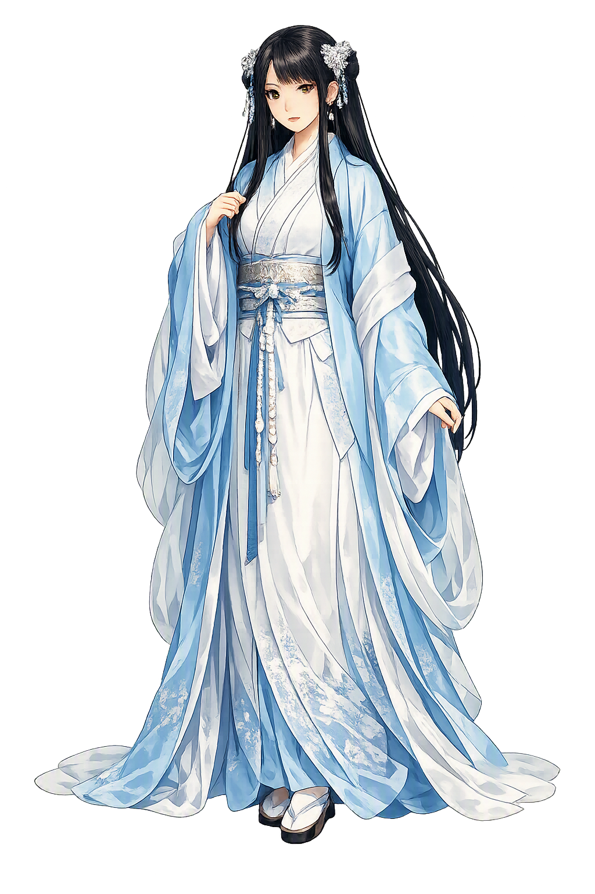

Stories of Nishinakahime
Nishinakahime's mythology is two sentences long in the Kojiki — and they are among the most striking in the whole canon. Everything else the tradition knows about her is in her name: hani, potter's clay, and yasu, the yielding. The potters of Japan's ancient kiln towns supplied the rest of her story — a thousand years of practice laid at her feet.
Izanami gave birth to the fire god Kagutsuchi, and the fire burned her so badly that she sickened and lay dying. From her body in its extremity came the last kami of the living generation: from her vomit, the metal-mountain deities Kanayamahiko and Kanayamahime; from her urine, the water goddess Mizuha-no-me; and from her bowels, the brother and sister of clay — Hani-yasu-biko and Hani-yasu-hime (Kojiki, birth of Kagutsuchi; the Nihon Shoki gives her the parallel names Haniyama-hime, 'Clay-Mountain Princess,' and Haniyasu-no-kami). The texts state this with the same flat calm as everything else in the divine genealogies, yet the implication is immense: the kami of humanity's three great materials — metal, water, clay — are born from the mother's death-agony. In Shinto's most radical birth story, the technologies that make civilization possible are not stolen from heaven or won by conquest; they are what a dying goddess leaves behind.
Hani-yasu is a name that explains itself, the way kami names so often do. Hani (埴) is potter's clay, the earth dug from the subsoil that holds water and takes any shape; yasu (安/易) is 'easy, gentle, workable.' The goddess is, literally, the clay that yields — earth soft enough to form. The great Kokugaku scholar Motoori Norinaga, in his Kojikiden, glossed the name as hani-neyasu: clay kneaded and worked until its stiffness softens and it becomes obedient to the hand. The spelling is itself a lesson: the Kojiki's characters 波邇夜須 are phonetic choices made for sound rather than sense, which is why later writers preferred the semantic form 埴, 'clay,' that the Nihon Shoki uses in Clay-Mountain Princess. Shinto rarely makes abstract theology; here the theology is a craft instruction. The name is a recipe: work the clay until it yields — and to read the name correctly is already to know what she is.
Read together, the kami born from Izanami's failing body form a complete inventory of material culture. Kanayama-hime, from the vomit, is metal — ore, smelting, the smith's art. Mizuha-no-me, from the urine, is water — wells, irrigation, the pure stream. And Hani-yasu-hime, from the feces, is clay — the kiln, the pot, the fired vessel that outlives its maker. Japan confirmed the inventory in its shrines: the clay siblings are enshrined in pottery districts as the kiln ancestors (tōso), and the Kanayama kami at mines and smithies. The distribution of a goddess's dying body across human technology is unique in the Kojiki: no other birth narrative so completely fuses physiology and craft. Her mythology is her etymology writ large — from the body of the mother earth-goddess comes the very substance that, worked by human hands, holds grain, sake, and the ashes of the dead.
The imperial chronicles give Hani-yasu-hime two clauses; Japanese potters gave her a thousand years. The great ceramic towns — Bizen, Shigaraki, Echizen, Seto, Tanba, Tokoname, the six ancient kilns (rokkoyō) — enshrine the clay kami as patrons and founders of their craft, under the titles Clay-Mountain Princess and Clay-Mountain Prince, and kiln observances still open with offerings to the earth the pots are made from. The tradition's material memory runs deeper than the shrines: the haniwa, the 'clay rings' and hollow figures set on the great tombs of the Kofun age (3rd–6th centuries), carry her element hani in their very name — clay that was never forgotten as sacred stuff. A goddess born in a moment of utmost indignity became the quiet patron of Japan's most refined art: the tea bowl's wabi, the Bizen jar's unglazed fire-marks — all of it earth-plus-fire, her two inheritances in one vessel.
Potter's Earth, the Kiln, and the Crafts of Fired Form
Nishinakahime is the Japanese goddess of potter's clay — the kami the Kojiki writes 波邇夜須毘売 and reads Hani-yasu-hime, 'the clay that yields.' Born, with her brother, from the dying goddess Izanami's body, she is the divinity potters invoke when earth must soften into vessel: patroness of the kiln, the wheel, and Japan's thousand-year ceramic tradition.
Hani 埴 is the subsoil earth dug for ceramics — her element and her body; the substance that takes any shape given patience.
Yasu 安, 'easy, gentle': Motoori Norinaga glossed her name as clay kneaded until it softens — a craft instruction inside the theology.
Born from Izanami's death-agony after the fire god's birth — clay and flame as twin inheritances from the same tragedy.
Enshrined in Japan's pottery towns from Bizen to Seto as the kiln founders' patron — the rokkoyō's tutelary goddess.
From the original script to the living URL
日子波邇夜須毘売命
The name in its original Japanese form. Nishinakahime (日子波邇夜須毘売命) is attested in the source tradition — “Day-sun wave princess”. Its original diacritics and script distinctions carry the full phonetic and orthographic weight of the source tradition.
nishinakahime
The plain nishinakahime form is identical to the Unicode restoration. Because this name is already written in Latin letters, no diacritics, stress, or script information were lost — only capitalization differs.
Nishinakahime
The Unicode restoration does not need to recover lost marks for Nishinakahime. Its value is canonical spelling and consistent cataloguing, not the reconstruction of erased orthography. The domain is readable as-is to both DNS and humanity.
Nishinakahime.com
This restoration is written entirely in ASCII letters — no Punycode encoding stands between Nishinakahime and the DNS. The domain reads identically to machines and to human eyes.
Owned, ideal, and ASCII forms of Nishinakahime
Nishinakahime
Restores 日子波邇夜須毘売命. The full Unicode restoration. nishinakahime.com is not in the PuniCodex collection — it is watched for release; if it drops, this temple upgrades to an owned flagship.
How Nishinakahime was spoken
How Nishinakahime is preserved in writing
A bespoke provenance study for Nishinakahime is being prepared by the PUNICODEX scholarly team.
Contribute scholarly provenance →Shinto's honesty about where gods come from has no sharper example. The clay goddess is born from the dying Izanami's excrement — the lowest moment of the greatest mother in the canon — and the Kojiki records it without apology, in the same breath as the fire that killed her. The tradition refuses the instinct to clean its gods up. Precisely because she comes from what every culture is taught to be ashamed of, Hani-yasu-hime is the patron of the material every culture actually lives by: the worked earth beneath the refinement, the clay beneath the glaze.
Enter Extended Lore